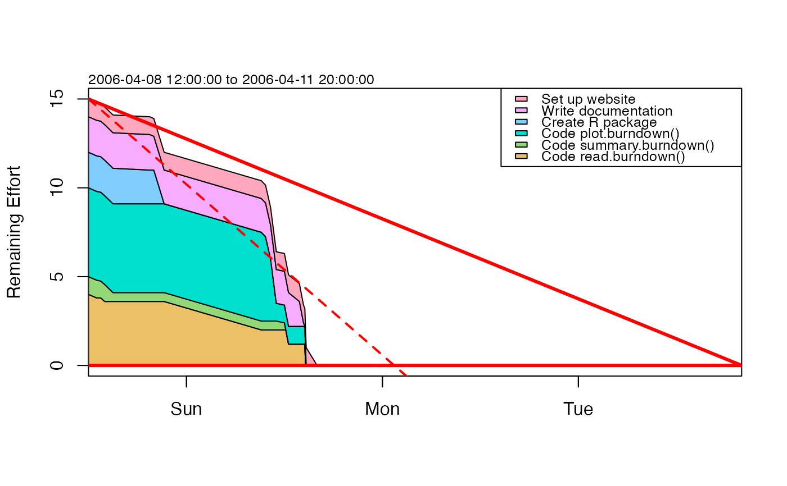

Plot a burndown chart.
Usage
# S4 method for burndown
plot(
x,
col = NULL,
draw.plan = TRUE,
draw.regression = TRUE,
draw.lastupdate = FALSE,
t.stop = "",
y.name = "Remaining Effort",
debug = FALSE,
...
)Arguments
- x
A burndown object.
- col
list of colours for items, starting with the first key in the file (which will be at the bottom of the chart). If not specified, the
hcl()scheme will be used, to generate colours that are distinct, that show up reasonably well on a monitor.- draw.plan
boolean, set to
TRUEto draw the plan, as a blue descending line with a horizontal intercept.- draw.regression
boolean, set to
TRUEto draw a red dashed line indicating the overall progress, as determined by regression.- draw.lastupdate
boolean, set to
TRUEto draw the last update (which otherwise requires a sharp eye).- t.stop
a POSIX time, the maximum time for graph (defaults to deadline if not given).
- y.name
character string, for labelling the vertical axis.
- debug
boolean, set to
TRUEto monitor the work.- ...
extra things handed down to plotting functions.
See also
Other things related to burndown data:
as.burndown(),
burndown-class,
burndown,
read.burndown(),
summary,burndown-method
Examples
library(plan)
data(burndown)
summary(burndown)
#> Start, 2006-04-08 12:00:00
#> Deadline, 2006-04-11 20:00:00
#> Key, Description, Effort
#> 1, Code read.burndown(), 4
#> 2, Code summary.burndown(), 1
#> 3, Code plot.burndown(), 5
#> 4, Create R package, 2
#> 5, Write documentation, 2
#> 6, Set up website, 1
#> Key, Done, Time
#> 1, 5, 2006-04-08 13:00:00
#> 2, 5, 2006-04-08 13:30:00
#> 1, 10, 2006-04-08 14:00:00
#> 2, 50, 2006-04-08 15:00:00
#> 4, 5, 2006-04-08 19:30:00
#> 5, 5, 2006-04-08 20:00:00
#> 4, 100, 2006-04-08 21:16:00
#> 1, 50, 2006-04-09 09:10:00
#> 3, 5, 2006-04-09 09:41:00
#> 3, 30, 2006-04-09 10:18:00
#> 3, 80, 2006-04-09 11:00:00
#> 2, 60, 2006-04-09 12:00:00
#> 2, 100, 2006-04-09 12:10:00
#> 1, 70, 2006-04-09 12:30:00
#> 5, 30, 2006-04-09 13:50:00
#> 5, 90, 2006-04-09 14:20:00
#> 5, 100, 2006-04-09 14:30:00
#> 1, 100, 2006-04-09 14:35:00
#> 3, 100, 2006-04-09 14:40:00
#> 6, 100, 2006-04-09 16:00:00
plot(burndown)
